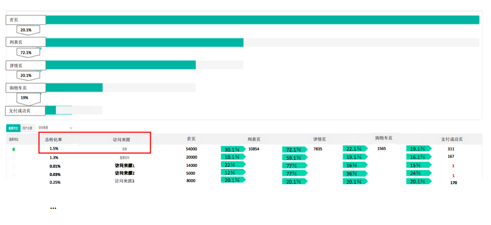
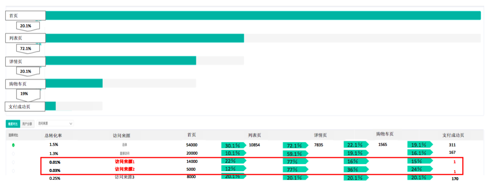
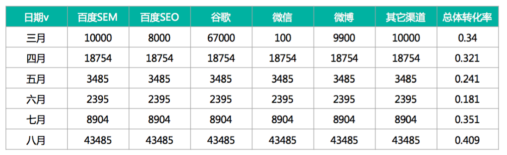
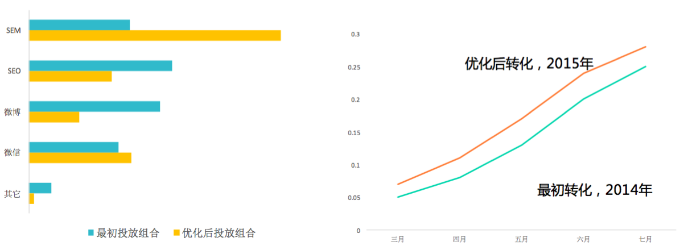
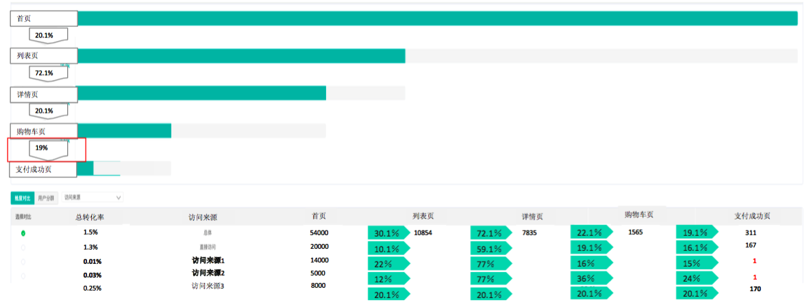
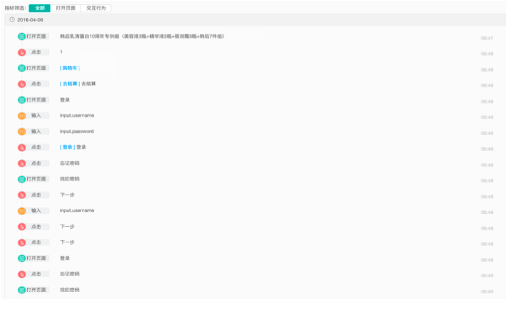

注册转化率，购买转化率等等，这些指标或多或少都和网站最后的营收有关。
例如两个不同的电商网站，体量一样，一个网站的购买转化率高，那么最终的营收一定更高。在这里我们不限于 o2o，p2p，社区网站等，就一般性地讨论如何精准提高转化率？
影响转化率的三大因素（维度）：
- 用户营销（内部因素）
- 渠道流量（外部因素）
- 网站、APP 体验（内部因素）
注：内部因素是指对已有用户进行维护
渠道流量
渠道投放时，一定有一个投放渠道集合，有效果好的，也有差的，好坏的标准体现在购买转化率上。
所以，如何选择投放渠道呢？
优选渠道
对于所有渠道，首先考虑的是如何将有限的成本分配到不同的渠道中呢？我们可以对不同渠道进行统计：

总转化率（红框内容）为 1.5%，并不高。

通过对比，我们发现访问来源 1 和访问来源 2 总转化率很低，同时访问来源 1 的流量却非常大。依靠业务判断，我们认为可能性有两种，一种是渠道质量比较差，另一种是该渠道为辅助渠道，投入较少。
如果是第一种，我们应该思考的是如何优化该渠道？
如果是第二种，我们可以考虑维持该流量，同时观察未来的表现。
量化分配
完成初步的渠道筛选，我们最终得到了几个渠道：
投放组合与购买转化率的关系：

然后我们需要思考的是：在资源有限的情况下，这样的投放组合最好吗?
此时我们需要依赖对业务的理解，不同搜索引擎的渠道哪些渠道需要投放更多？哪些更少呢？大到多少小到多少也要依赖于经验。
除了凭借经验来进行投放，如何能使投放变得更精确呢？
我们需要找到各渠道与最终转化率的关系，量化投放，寻找最优投放策略。
1 | 转化率=F(渠道1_PV,渠道2_PV,渠道3_PV,...,渠道n_PV) |
根据数据的特性，此处可能是简单的线性关系也可能是呈周期性的时间序列，依照具体数据特点决定。
1 | 线性模型：转化率 = a0 + a1*渠道1_PV + a2*渠道2_PV + ... + an*渠道n_PV |
在已经确定的条件下，我们需要对投放进行优化：
求解转化率 F(渠道1_PV,渠道2_PV,渠道3_PV,...,渠道n_PV) 的最大值，获得优化的投放组合
限定条件: 总花费 = M
比较优化前和优化后的策略结果：

用户营销
用户营销是指进行的网站运营、营销活动，用于提高转化率。
确定业务场景，绘制用户画像/标签
另外还有一些常用的分类：
- 会员属性：性别，城市，设备，登陆次数..
- 活跃度：未转化会员（之前注册未购买），新会员，活跃会员，沉寂会员，….
- 购买偏好：根据业务场景，预定平台，推广渠道敏感，….
- 注册来源：平台（PC，APP，H5等），推广渠道，….
精准营销
业内(市场类营销)常用 RFM（Recency、Frequency、Monetary） 模型，对用户价值度分级：
- 近期有使用\购买，高频词，高金额消费用户: 高价值用户
- 近期有使用\购买，高频次，低金额消费用户: 活跃的小金额用户
- 近期有使用\购买，低频次，高金额消费用户: 活跃的高潜力用户
- 近期有使用\购买，低频次，低金额消费用户: 活跃的低价值用户
…… - 近期无使用\购买，低频次，低金额消费用户: 低价值用户
如何定义近期、高频和高金额需要根据业务来定义，例如近期可以为 30 天/3个月，高频可以为 30 天登录次数超过 xx 次等。
针对高价值用户进行推送，投入和产出才是有效率的。
网站、APP 体验
常见的体验问题：
- 支付环节的流畅性
通常当支付环节的流畅性很好时，流失性很低。
页面简洁，操作容易
例如：按钮太多会影响转化流程
图片质量
例如：图片中含水印，光线太差会认为产品质量低等
搜索的精准匹配
例如：当用户输入“芒果”，期望的查询结果是与芒果相关的，但如果出来的是芒果干、芒果糖，则会影响用户体验，导致用户流失。
…
转化率特别低时，如何来进行分析：

漏斗可以看见每一步的转化率，从购物车到支付成功的转化率非常低，我们的直接想法就是看一下究竟出现了什么问题？
对进入购物车的用户用户进行分群，利用 GrowingIO 的用户细查功能，可以追踪到某个用户进入页面后的所有操作行为（按钮点击、输入等）：

我们发现用户在选择某款产品后，选择数量，进入购物车，发现未登录后开始输入登录信息，未登录成功，点击“忘记密码”，进入找回密码功能。但是用户再次进入找回密码功能，
通过亲身体验该过程，我们发现在修改密码页面是存在 bug 的，忘记密码后无法忘记密码找回密码，最后导致用户的丢失。